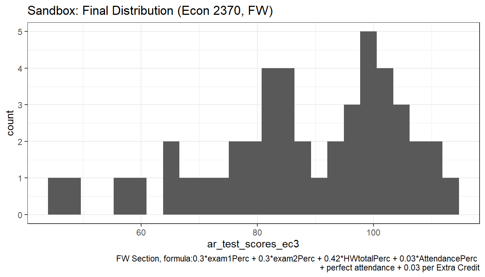
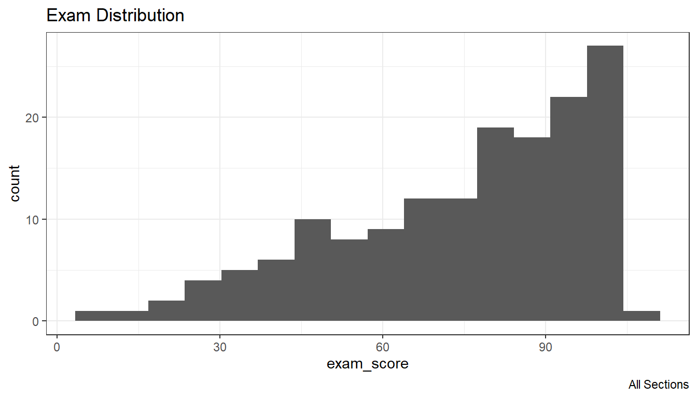

Chapter 2 Summarize Data
2.1 Counting Observation
2.1.1 Uncount
Go back to fan’s REconTools Package, R Code Examples Repository (bookdown site), or Intro Stats with R Repository (bookdown site).
In some panel, there are \(N\) individuals, each observed for \(Y_i\) years. Given a dataset with two variables, the individual index, and the \(Y_i\) variable, expand the dataframe so that there is a row for each individual index’s each unique year in the survey.
Search:
- r duplicate row by variable
Links:
Algorithm:
- generate testing frame, the individual attribute dataset with invariant information over panel
- uncount, duplicate rows by years in survey
- group and generate sorted index
- add indiviual specific stat year to index
# 1. Array of Years in the Survey
ar_years_in_survey <- c(2,3,1,10,2,5)
ar_start_yaer <- c(1,2,3,1,1,1)
ar_end_year <- c(2,4,3,10,2,5)
mt_combine <- cbind(ar_years_in_survey, ar_start_yaer, ar_end_year)
# This is the individual attribute dataset, attributes that are invariant acrosss years
tb_indi_attributes <- as_tibble(mt_combine) %>% rowid_to_column(var = "ID")
# 2. Sort and generate variable equal to sorted index
tb_indi_panel <- tb_indi_attributes %>% uncount(ar_years_in_survey)
# 3. Panel now construct exactly which year in survey, note that all needed is sort index
# Note sorting not needed, all rows identical now
tb_indi_panel <- tb_indi_panel %>%
group_by(ID) %>%
mutate(yr_in_survey = row_number())
tb_indi_panel <- tb_indi_panel %>%
mutate(calendar_year = yr_in_survey + ar_start_yaer - 1)
# Show results Head 10
tb_indi_panel %>% head(10) %>%
kable() %>%
kable_styling_fc()| ID | ar_start_yaer | ar_end_year | yr_in_survey | calendar_year |
|---|---|---|---|---|
| 1 | 1 | 2 | 1 | 1 |
| 1 | 1 | 2 | 2 | 2 |
| 2 | 2 | 4 | 1 | 2 |
| 2 | 2 | 4 | 2 | 3 |
| 2 | 2 | 4 | 3 | 4 |
| 3 | 3 | 3 | 1 | 3 |
| 4 | 1 | 10 | 1 | 1 |
| 4 | 1 | 10 | 2 | 2 |
| 4 | 1 | 10 | 3 | 3 |
| 4 | 1 | 10 | 4 | 4 |
2.2 Sorting, Indexing, Slicing
2.2.1 Sorting
Go back to fan’s REconTools Package, R Code Examples Repository (bookdown site), or Intro Stats with R Repository (bookdown site).
2.2.1.1 Generate Sorted Index within Group with Repeating Values
There is a variable, sort by this variable, then generate index from 1 to N representing sorted values of this index. If there are repeating values, still assign index, different index each value.
- r generate index sort
- dplyr mutate equals index
# Sort and generate variable equal to sorted index
df_iris <- iris %>% arrange(Sepal.Length) %>%
mutate(Sepal.Len.Index = row_number()) %>%
select(Sepal.Length, Sepal.Len.Index, everything())
# Show results Head 10
df_iris %>% head(10) %>%
kable() %>%
kable_styling_fc_wide()| Sepal.Length | Sepal.Len.Index | Sepal.Width | Petal.Length | Petal.Width | Species |
|---|---|---|---|---|---|
| 4.3 | 1 | 3.0 | 1.1 | 0.1 | setosa |
| 4.4 | 2 | 2.9 | 1.4 | 0.2 | setosa |
| 4.4 | 3 | 3.0 | 1.3 | 0.2 | setosa |
| 4.4 | 4 | 3.2 | 1.3 | 0.2 | setosa |
| 4.5 | 5 | 2.3 | 1.3 | 0.3 | setosa |
| 4.6 | 6 | 3.1 | 1.5 | 0.2 | setosa |
| 4.6 | 7 | 3.4 | 1.4 | 0.3 | setosa |
| 4.6 | 8 | 3.6 | 1.0 | 0.2 | setosa |
| 4.6 | 9 | 3.2 | 1.4 | 0.2 | setosa |
| 4.7 | 10 | 3.2 | 1.3 | 0.2 | setosa |
2.2.1.2 Populate Value from Lowest Index to All other Rows
We would like to calculate for example the ratio of each individual’s highest to the the person with the lowest height in a dataset. We first need to generated sorted index from lowest to highest, and then populate the lowest height to all rows, and then divide.
Search Terms:
- r spread value to all rows from one row
- r other rows equal to the value of one row
- Conditional assignment of one variable to the value of one of two other variables
- dplyr mutate conditional
- dplyr value from one row to all rows
- dplyr mutate equal to value in another cell
Links:
2.2.1.2.1 Short Method: mutate and min
We just want the lowest value to be in its own column, so that we can compute various statistics using the lowest value variable and the original variable.
# 1. Sort
df_iris_m1 <- iris %>% mutate(Sepal.Len.Lowest.all = min(Sepal.Length)) %>%
select(Sepal.Length, Sepal.Len.Lowest.all, everything())
# Show results Head 10
df_iris_m1 %>% head(10) %>%
kable() %>%
kable_styling_fc_wide()| Sepal.Length | Sepal.Len.Lowest.all | Sepal.Width | Petal.Length | Petal.Width | Species |
|---|---|---|---|---|---|
| 5.1 | 4.3 | 3.5 | 1.4 | 0.2 | setosa |
| 4.9 | 4.3 | 3.0 | 1.4 | 0.2 | setosa |
| 4.7 | 4.3 | 3.2 | 1.3 | 0.2 | setosa |
| 4.6 | 4.3 | 3.1 | 1.5 | 0.2 | setosa |
| 5.0 | 4.3 | 3.6 | 1.4 | 0.2 | setosa |
| 5.4 | 4.3 | 3.9 | 1.7 | 0.4 | setosa |
| 4.6 | 4.3 | 3.4 | 1.4 | 0.3 | setosa |
| 5.0 | 4.3 | 3.4 | 1.5 | 0.2 | setosa |
| 4.4 | 4.3 | 2.9 | 1.4 | 0.2 | setosa |
| 4.9 | 4.3 | 3.1 | 1.5 | 0.1 | setosa |
2.2.1.2.2 Long Method: row_number and case_when
This is the long method, using row_number, and case_when. The benefit of this method is that it generates several intermediate variables that might be useful. And the key final step is to set a new variable (A=Sepal.Len.Lowest.all) equal to another variable’s (B=Sepal.Length’s) value at the index that satisfies condition based a third variable (C=Sepal.Len.Index).
# 1. Sort
# 2. generate index
# 3. value at lowest index (case_when)
# 4. spread value from lowest index to other rows
# Note step 4 does not require step 3
df_iris_m2 <- iris %>% arrange(Sepal.Length) %>%
mutate(Sepal.Len.Index = row_number()) %>%
mutate(Sepal.Len.Lowest.one =
case_when(row_number()==1 ~ Sepal.Length)) %>%
mutate(Sepal.Len.Lowest.all =
Sepal.Length[Sepal.Len.Index==1]) %>%
select(Sepal.Length, Sepal.Len.Index,
Sepal.Len.Lowest.one, Sepal.Len.Lowest.all)
# Show results Head 10
df_iris_m2 %>% head(10) %>%
kable() %>%
kable_styling_fc_wide()| Sepal.Length | Sepal.Len.Index | Sepal.Len.Lowest.one | Sepal.Len.Lowest.all |
|---|---|---|---|
| 4.3 | 1 | 4.3 | 4.3 |
| 4.4 | 2 | NA | 4.3 |
| 4.4 | 3 | NA | 4.3 |
| 4.4 | 4 | NA | 4.3 |
| 4.5 | 5 | NA | 4.3 |
| 4.6 | 6 | NA | 4.3 |
| 4.6 | 7 | NA | 4.3 |
| 4.6 | 8 | NA | 4.3 |
| 4.6 | 9 | NA | 4.3 |
| 4.7 | 10 | NA | 4.3 |
2.2.1.3 Generate Sorted Index based on Deviations
Generate Positive and Negative Index based on Ordered Deviation from some Number.
There is a variable that is continuous, substract a number from this variable, and generate index based on deviations. Think of the index as generating intervals indicating where the value lies. 0th index indicates the largest value in sequence that is smaller than or equal to number \(x\), 1st index indicates the smallest value in sequence that is larger than number \(x\).
The solution below is a little bit convoluated and long, there is likely a much quicker way. The process below shows various intermediary outputs that help arrive at deviation index Sepal.Len.Devi.Index from initial sorted index Sepal.Len.Index.
search:
- dplyr arrange ignore na
- dplyr index deviation from order number sequence
- dplyr index below above
- dplyr index order below above value
# 1. Sort and generate variable equal to sorted index
# 2. Plus or minus deviations from some value
# 3. Find the zero, which means, the number closests to zero including zero from the negative side
# 4. Find the index at the highest zero and below deviation point
# 5. Difference of zero index and original sorted index
sc_val_x <- 4.65
df_iris_deviate <- iris %>% arrange(Sepal.Length) %>%
mutate(Sepal.Len.Index = row_number()) %>%
mutate(Sepal.Len.Devi = (Sepal.Length - sc_val_x)) %>%
mutate(Sepal.Len.Devi.Neg =
case_when(Sepal.Len.Devi <= 0 ~ (-1)*(Sepal.Len.Devi))) %>%
arrange((Sepal.Len.Devi.Neg), desc(Sepal.Len.Index)) %>%
mutate(Sepal.Len.Index.Zero =
case_when(row_number() == 1 ~ Sepal.Len.Index)) %>%
mutate(Sepal.Len.Devi.Index =
Sepal.Len.Index - Sepal.Len.Index.Zero[row_number() == 1]) %>%
arrange(Sepal.Len.Index) %>%
select(Sepal.Length, Sepal.Len.Index, Sepal.Len.Devi,
Sepal.Len.Devi.Neg, Sepal.Len.Index.Zero, Sepal.Len.Devi.Index)
# Show results Head 10
df_iris_deviate %>% head(20) %>%
kable() %>%
kable_styling_fc_wide()| Sepal.Length | Sepal.Len.Index | Sepal.Len.Devi | Sepal.Len.Devi.Neg | Sepal.Len.Index.Zero | Sepal.Len.Devi.Index |
|---|---|---|---|---|---|
| 4.3 | 1 | -0.35 | 0.35 | NA | -8 |
| 4.4 | 2 | -0.25 | 0.25 | NA | -7 |
| 4.4 | 3 | -0.25 | 0.25 | NA | -6 |
| 4.4 | 4 | -0.25 | 0.25 | NA | -5 |
| 4.5 | 5 | -0.15 | 0.15 | NA | -4 |
| 4.6 | 6 | -0.05 | 0.05 | NA | -3 |
| 4.6 | 7 | -0.05 | 0.05 | NA | -2 |
| 4.6 | 8 | -0.05 | 0.05 | NA | -1 |
| 4.6 | 9 | -0.05 | 0.05 | 9 | 0 |
| 4.7 | 10 | 0.05 | NA | NA | 1 |
| 4.7 | 11 | 0.05 | NA | NA | 2 |
| 4.8 | 12 | 0.15 | NA | NA | 3 |
| 4.8 | 13 | 0.15 | NA | NA | 4 |
| 4.8 | 14 | 0.15 | NA | NA | 5 |
| 4.8 | 15 | 0.15 | NA | NA | 6 |
| 4.8 | 16 | 0.15 | NA | NA | 7 |
| 4.9 | 17 | 0.25 | NA | NA | 8 |
| 4.9 | 18 | 0.25 | NA | NA | 9 |
| 4.9 | 19 | 0.25 | NA | NA | 10 |
| 4.9 | 20 | 0.25 | NA | NA | 11 |
2.2.2 Group, Sort and Slice
Go back to fan’s REconTools Package, R Code Examples Repository (bookdown site), or Intro Stats with R Repository (bookdown site).
2.2.2.1 Get Highest Values from Groups
There is a dataframe with a grouping variable. Get N rows that have the highest sorted value for another numeric variable. In the example below, group by cyl and get the cars with the lowest mpg in each cyl group.
Show all values.
kable(mtcars %>% arrange(cyl, mpg)) %>% kable_styling_fc()| mpg | cyl | disp | hp | drat | wt | qsec | vs | am | gear | carb | |
|---|---|---|---|---|---|---|---|---|---|---|---|
| Volvo 142E | 21.4 | 4 | 121.0 | 109 | 4.11 | 2.780 | 18.60 | 1 | 1 | 4 | 2 |
| Toyota Corona | 21.5 | 4 | 120.1 | 97 | 3.70 | 2.465 | 20.01 | 1 | 0 | 3 | 1 |
| Datsun 710 | 22.8 | 4 | 108.0 | 93 | 3.85 | 2.320 | 18.61 | 1 | 1 | 4 | 1 |
| Merc 230 | 22.8 | 4 | 140.8 | 95 | 3.92 | 3.150 | 22.90 | 1 | 0 | 4 | 2 |
| Merc 240D | 24.4 | 4 | 146.7 | 62 | 3.69 | 3.190 | 20.00 | 1 | 0 | 4 | 2 |
| Porsche 914-2 | 26.0 | 4 | 120.3 | 91 | 4.43 | 2.140 | 16.70 | 0 | 1 | 5 | 2 |
| Fiat X1-9 | 27.3 | 4 | 79.0 | 66 | 4.08 | 1.935 | 18.90 | 1 | 1 | 4 | 1 |
| Honda Civic | 30.4 | 4 | 75.7 | 52 | 4.93 | 1.615 | 18.52 | 1 | 1 | 4 | 2 |
| Lotus Europa | 30.4 | 4 | 95.1 | 113 | 3.77 | 1.513 | 16.90 | 1 | 1 | 5 | 2 |
| Fiat 128 | 32.4 | 4 | 78.7 | 66 | 4.08 | 2.200 | 19.47 | 1 | 1 | 4 | 1 |
| Toyota Corolla | 33.9 | 4 | 71.1 | 65 | 4.22 | 1.835 | 19.90 | 1 | 1 | 4 | 1 |
| Merc 280C | 17.8 | 6 | 167.6 | 123 | 3.92 | 3.440 | 18.90 | 1 | 0 | 4 | 4 |
| Valiant | 18.1 | 6 | 225.0 | 105 | 2.76 | 3.460 | 20.22 | 1 | 0 | 3 | 1 |
| Merc 280 | 19.2 | 6 | 167.6 | 123 | 3.92 | 3.440 | 18.30 | 1 | 0 | 4 | 4 |
| Ferrari Dino | 19.7 | 6 | 145.0 | 175 | 3.62 | 2.770 | 15.50 | 0 | 1 | 5 | 6 |
| Mazda RX4 | 21.0 | 6 | 160.0 | 110 | 3.90 | 2.620 | 16.46 | 0 | 1 | 4 | 4 |
| Mazda RX4 Wag | 21.0 | 6 | 160.0 | 110 | 3.90 | 2.875 | 17.02 | 0 | 1 | 4 | 4 |
| Hornet 4 Drive | 21.4 | 6 | 258.0 | 110 | 3.08 | 3.215 | 19.44 | 1 | 0 | 3 | 1 |
| Cadillac Fleetwood | 10.4 | 8 | 472.0 | 205 | 2.93 | 5.250 | 17.98 | 0 | 0 | 3 | 4 |
| Lincoln Continental | 10.4 | 8 | 460.0 | 215 | 3.00 | 5.424 | 17.82 | 0 | 0 | 3 | 4 |
| Camaro Z28 | 13.3 | 8 | 350.0 | 245 | 3.73 | 3.840 | 15.41 | 0 | 0 | 3 | 4 |
| Duster 360 | 14.3 | 8 | 360.0 | 245 | 3.21 | 3.570 | 15.84 | 0 | 0 | 3 | 4 |
| Chrysler Imperial | 14.7 | 8 | 440.0 | 230 | 3.23 | 5.345 | 17.42 | 0 | 0 | 3 | 4 |
| Maserati Bora | 15.0 | 8 | 301.0 | 335 | 3.54 | 3.570 | 14.60 | 0 | 1 | 5 | 8 |
| Merc 450SLC | 15.2 | 8 | 275.8 | 180 | 3.07 | 3.780 | 18.00 | 0 | 0 | 3 | 3 |
| AMC Javelin | 15.2 | 8 | 304.0 | 150 | 3.15 | 3.435 | 17.30 | 0 | 0 | 3 | 2 |
| Dodge Challenger | 15.5 | 8 | 318.0 | 150 | 2.76 | 3.520 | 16.87 | 0 | 0 | 3 | 2 |
| Ford Pantera L | 15.8 | 8 | 351.0 | 264 | 4.22 | 3.170 | 14.50 | 0 | 1 | 5 | 4 |
| Merc 450SE | 16.4 | 8 | 275.8 | 180 | 3.07 | 4.070 | 17.40 | 0 | 0 | 3 | 3 |
| Merc 450SL | 17.3 | 8 | 275.8 | 180 | 3.07 | 3.730 | 17.60 | 0 | 0 | 3 | 3 |
| Hornet Sportabout | 18.7 | 8 | 360.0 | 175 | 3.15 | 3.440 | 17.02 | 0 | 0 | 3 | 2 |
| Pontiac Firebird | 19.2 | 8 | 400.0 | 175 | 3.08 | 3.845 | 17.05 | 0 | 0 | 3 | 2 |
Three groups min mpg each group:
# use mtcars: slice_head gets the lowest sorted value
df_groupby_top_mpg <- mtcars %>%
arrange(cyl, mpg) %>%
group_by(cyl) %>%
slice_head(n=1) %>%
select(cyl, mpg)
# display
kable(df_groupby_top_mpg) %>% kable_styling_fc()| cyl | mpg |
|---|---|
| 4 | 21.4 |
| 6 | 17.8 |
| 8 | 10.4 |
2.3 Group Statistics
2.3.1 Cumulative Statistics within Group
Go back to fan’s REconTools Package, R Code Examples Repository (bookdown site), or Intro Stats with R Repository (bookdown site).
2.3.1.1 Cumulative Mean
There is a dataset where there are different types of individuals, perhaps household size, that is the grouping variable. Within each group, we compute the incremental marginal propensity to consume for each additional check. We now also want to know the average propensity to consume up to each check considering all allocated checks. We needed to calculatet this for Nygaard, Sørensen and Wang (2021). This can be dealt with by using the cumall function.
Use the df_hgt_wgt as the testing dataset. In the example below, group by individual id, sort by survey month, and cumulative mean over the protein variable.
In the protein example
First select the testing dataset and variables.
# Load the REconTools Dataset df_hgt_wgt
data("df_hgt_wgt")
# str(df_hgt_wgt)
# Select several rows
df_hgt_wgt_sel <- df_hgt_wgt %>%
filter(S.country == "Cebu") %>%
select(indi.id, svymthRound, prot)Second, arrange, groupby, and cumulative mean. The protein variable is protein for each survey month, from month 2 to higher as babies grow. The protein intake observed is increasing quickly, hence, the cumulative mean is lower than the observed value for the survey month of the baby.
# Group by indi.id and sort by protein
df_hgt_wgt_sel_cummean <- df_hgt_wgt_sel %>%
arrange(indi.id, svymthRound) %>%
group_by(indi.id) %>%
mutate(prot_cummean = cummean(prot))
# display results
REconTools::ff_summ_percentiles(df_hgt_wgt_sel_cummean)
# display results
df_hgt_wgt_sel_cummean %>% filter(indi.id %in% c(17, 18)) %>%
kable() %>% kable_styling_fc()| indi.id | svymthRound | prot | prot_cummean |
|---|---|---|---|
| 17 | 0 | 0.5 | 0.5000000 |
| 17 | 2 | 0.7 | 0.6000000 |
| 17 | 4 | 0.5 | 0.5666667 |
| 17 | 6 | 0.5 | 0.5500000 |
| 17 | 8 | 6.1 | 1.6600000 |
| 17 | 10 | 5.0 | 2.2166667 |
| 17 | 12 | 6.4 | 2.8142857 |
| 17 | 14 | 20.1 | 4.9750000 |
| 17 | 16 | 20.1 | 6.6555556 |
| 17 | 18 | 23.0 | 8.2900000 |
| 17 | 20 | 24.9 | 9.8000000 |
| 17 | 22 | 20.1 | 10.6583333 |
| 17 | 24 | 10.1 | 10.6153846 |
| 17 | 102 | NA | NA |
| 17 | 138 | NA | NA |
| 17 | 187 | NA | NA |
| 17 | 224 | NA | NA |
| 17 | 258 | NA | NA |
| 18 | 0 | 1.2 | 1.2000000 |
| 18 | 2 | 4.7 | 2.9500000 |
| 18 | 4 | 17.2 | 7.7000000 |
| 18 | 6 | 18.6 | 10.4250000 |
| 18 | 8 | NA | NA |
| 18 | 10 | 16.8 | NA |
| 18 | 12 | NA | NA |
| 18 | 14 | NA | NA |
| 18 | 16 | NA | NA |
| 18 | 18 | NA | NA |
| 18 | 20 | NA | NA |
| 18 | 22 | 15.7 | NA |
| 18 | 24 | 22.5 | NA |
| 18 | 102 | NA | NA |
| 18 | 138 | NA | NA |
| 18 | 187 | NA | NA |
| 18 | 224 | NA | NA |
| 18 | 258 | NA | NA |
Third, in the basic implementation above, if an incremental month has NA, no values computed at that point or after. This is the case for individual 18 above. To ignore NA, we have, from this. Note how results for individual 18 changes.
# https://stackoverflow.com/a/49906718/8280804
# Group by indi.id and sort by protein
df_hgt_wgt_sel_cummean_noNA <- df_hgt_wgt_sel %>%
arrange(indi.id, svymthRound) %>%
group_by(indi.id, isna = is.na(prot)) %>%
mutate(prot_cummean = ifelse(isna, NA, cummean(prot)))
# display results
df_hgt_wgt_sel_cummean_noNA %>% filter(indi.id %in% c(17, 18)) %>%
kable() %>% kable_styling_fc()| indi.id | svymthRound | prot | isna | prot_cummean |
|---|---|---|---|---|
| 17 | 0 | 0.5 | FALSE | 0.5000000 |
| 17 | 2 | 0.7 | FALSE | 0.6000000 |
| 17 | 4 | 0.5 | FALSE | 0.5666667 |
| 17 | 6 | 0.5 | FALSE | 0.5500000 |
| 17 | 8 | 6.1 | FALSE | 1.6600000 |
| 17 | 10 | 5.0 | FALSE | 2.2166667 |
| 17 | 12 | 6.4 | FALSE | 2.8142857 |
| 17 | 14 | 20.1 | FALSE | 4.9750000 |
| 17 | 16 | 20.1 | FALSE | 6.6555556 |
| 17 | 18 | 23.0 | FALSE | 8.2900000 |
| 17 | 20 | 24.9 | FALSE | 9.8000000 |
| 17 | 22 | 20.1 | FALSE | 10.6583333 |
| 17 | 24 | 10.1 | FALSE | 10.6153846 |
| 17 | 102 | NA | TRUE | NA |
| 17 | 138 | NA | TRUE | NA |
| 17 | 187 | NA | TRUE | NA |
| 17 | 224 | NA | TRUE | NA |
| 17 | 258 | NA | TRUE | NA |
| 18 | 0 | 1.2 | FALSE | 1.2000000 |
| 18 | 2 | 4.7 | FALSE | 2.9500000 |
| 18 | 4 | 17.2 | FALSE | 7.7000000 |
| 18 | 6 | 18.6 | FALSE | 10.4250000 |
| 18 | 8 | NA | TRUE | NA |
| 18 | 10 | 16.8 | FALSE | 11.7000000 |
| 18 | 12 | NA | TRUE | NA |
| 18 | 14 | NA | TRUE | NA |
| 18 | 16 | NA | TRUE | NA |
| 18 | 18 | NA | TRUE | NA |
| 18 | 20 | NA | TRUE | NA |
| 18 | 22 | 15.7 | FALSE | 12.3666667 |
| 18 | 24 | 22.5 | FALSE | 13.8142857 |
| 18 | 102 | NA | TRUE | NA |
| 18 | 138 | NA | TRUE | NA |
| 18 | 187 | NA | TRUE | NA |
| 18 | 224 | NA | TRUE | NA |
| 18 | 258 | NA | TRUE | NA |
2.3.2 Groups Statistics
Go back to fan’s REconTools Package, R Code Examples Repository (bookdown site), or Intro Stats with R Repository (bookdown site).
2.3.2.1 Aggrgate Groups only Unique Group and Count
There are two variables that are numeric, we want to find all the unique groups of these two variables in a dataset and count how many times each unique group occurs
- r unique occurrence of numeric groups
- How to add count of unique values by group to R data.frame
# Numeric value combinations unique Groups
vars.group <- c('hgt0', 'wgt0')
# dataset subsetting
df_use <- df_hgt_wgt %>% select(!!!syms(c(vars.group))) %>%
mutate(hgt0 = round(hgt0/5)*5, wgt0 = round(wgt0/2000)*2000) %>%
drop_na()
# Group, count and generate means for each numeric variables
# mutate_at(vars.group, funs(as.factor(.))) %>%
df.group.count <- df_use %>% group_by(!!!syms(vars.group)) %>%
arrange(!!!syms(vars.group)) %>%
summarise(n_obs_group=n())
# Show results Head 10
df.group.count %>% kable() %>% kable_styling_fc()| hgt0 | wgt0 | n_obs_group |
|---|---|---|
| 40 | 2000 | 122 |
| 45 | 2000 | 4586 |
| 45 | 4000 | 470 |
| 50 | 2000 | 9691 |
| 50 | 4000 | 13106 |
| 55 | 2000 | 126 |
| 55 | 4000 | 1900 |
| 60 | 6000 | 18 |
2.3.2.2 Aggrgate Groups only Unique Group Show up With Means
Several variables that are grouping identifiers. Several variables that are values which mean be unique for each group members. For example, a Panel of income for N households over T years with also household education information that is invariant over time. Want to generate a dataset where the unit of observation are households, rather than household years. Take average of all numeric variables that are household and year specific.
A complicating factor potentially is that the number of observations differ within group, for example, income might be observed for all years for some households but not for other households.
- r dplyr aggregate group average
- Aggregating and analyzing data with dplyr
- column can’t be modified because it is a grouping variable
- see also: Aggregating and analyzing data with dplyr
# In the df_hgt_wgt from R4Econ, there is a country id, village id,
# and individual id, and various other statistics
vars.group <- c('S.country', 'vil.id', 'indi.id')
vars.values <- c('hgt', 'momEdu')
# dataset subsetting
df_use <- df_hgt_wgt %>% select(!!!syms(c(vars.group, vars.values)))
# Group, count and generate means for each numeric variables
df.group <- df_use %>% group_by(!!!syms(vars.group)) %>%
arrange(!!!syms(vars.group)) %>%
summarise_if(is.numeric,
funs(mean = mean(., na.rm = TRUE),
sd = sd(., na.rm = TRUE),
n = sum(is.na(.)==0)))
# Show results Head 10
df.group %>% head(10) %>%
kable() %>%
kable_styling_fc_wide()| S.country | vil.id | indi.id | hgt_mean | momEdu_mean | hgt_sd | momEdu_sd | hgt_n | momEdu_n |
|---|---|---|---|---|---|---|---|---|
| Cebu | 1 | 1 | 61.80000 | 5.3 | 9.520504 | 0 | 7 | 18 |
| Cebu | 1 | 2 | 68.86154 | 7.1 | 9.058931 | 0 | 13 | 18 |
| Cebu | 1 | 3 | 80.45882 | 9.4 | 29.894231 | 0 | 17 | 18 |
| Cebu | 1 | 4 | 88.10000 | 13.9 | 35.533166 | 0 | 18 | 18 |
| Cebu | 1 | 5 | 97.70556 | 11.3 | 41.090366 | 0 | 18 | 18 |
| Cebu | 1 | 6 | 87.49444 | 7.3 | 35.586439 | 0 | 18 | 18 |
| Cebu | 1 | 7 | 90.79412 | 10.4 | 38.722385 | 0 | 17 | 18 |
| Cebu | 1 | 8 | 68.45385 | 13.5 | 10.011961 | 0 | 13 | 18 |
| Cebu | 1 | 9 | 86.21111 | 10.4 | 35.126057 | 0 | 18 | 18 |
| Cebu | 1 | 10 | 87.67222 | 10.5 | 36.508127 | 0 | 18 | 18 |
# Show results Head 10
df.group %>% tail(10) %>%
kable() %>%
kable_styling_fc_wide()| S.country | vil.id | indi.id | hgt_mean | momEdu_mean | hgt_sd | momEdu_sd | hgt_n | momEdu_n |
|---|---|---|---|---|---|---|---|---|
| Guatemala | 14 | 2014 | 66.97000 | NaN | 8.967974 | NA | 10 | 0 |
| Guatemala | 14 | 2015 | 71.71818 | NaN | 11.399984 | NA | 11 | 0 |
| Guatemala | 14 | 2016 | 66.33000 | NaN | 9.490352 | NA | 10 | 0 |
| Guatemala | 14 | 2017 | 76.40769 | NaN | 14.827871 | NA | 13 | 0 |
| Guatemala | 14 | 2018 | 74.55385 | NaN | 12.707846 | NA | 13 | 0 |
| Guatemala | 14 | 2019 | 70.47500 | NaN | 11.797390 | NA | 12 | 0 |
| Guatemala | 14 | 2020 | 60.28750 | NaN | 7.060036 | NA | 8 | 0 |
| Guatemala | 14 | 2021 | 84.96000 | NaN | 15.446193 | NA | 10 | 0 |
| Guatemala | 14 | 2022 | 79.38667 | NaN | 15.824749 | NA | 15 | 0 |
| Guatemala | 14 | 2023 | 66.50000 | NaN | 8.613113 | NA | 8 | 0 |
2.3.3 One Variable Group Summary
Go back to fan’s REconTools Package, R Code Examples Repository (bookdown site), or Intro Stats with R Repository (bookdown site).
There is a categorical variable (based on one or the interaction of multiple variables), there is a continuous variable, obtain statistics for the continuous variable conditional on the categorical variable, but also unconditionally.
Store results in a matrix, but also flatten results wide to row with appropriate keys/variable-names for all group statistics.
Pick which statistics to be included in final wide row
2.3.3.1 Build Program
# Single Variable Group Statistics (also generate overall statistics)
ff_summ_by_group_summ_one <- function(
df, vars.group, var.numeric, str.stats.group = 'main',
str.stats.specify = NULL, boo.overall.stats = TRUE){
# List of statistics
# https://rdrr.io/cran/dplyr/man/summarise.html
strs.center <- c('mean', 'median')
strs.spread <- c('sd', 'IQR', 'mad')
strs.range <- c('min', 'max')
strs.pos <- c('first', 'last')
strs.count <- c('n_distinct')
# Grouping of Statistics
if (missing(str.stats.specify)) {
if (str.stats.group == 'main') {
strs.all <- c('mean', 'min', 'max', 'sd')
}
if (str.stats.group == 'all') {
strs.all <- c(strs.center, strs.spread, strs.range, strs.pos, strs.count)
}
} else {
strs.all <- str.stats.specify
}
# Start Transform
df <- df %>% drop_na() %>%
mutate(!!(var.numeric) := as.numeric(!!sym(var.numeric)))
# Overall Statistics
if (boo.overall.stats) {
df.overall.stats <- df %>%
summarize_at(vars(var.numeric), funs(!!!strs.all))
if (length(strs.all) == 1) {
# give it a name, otherwise if only one stat, name of stat not saved
df.overall.stats <- df.overall.stats %>%
rename(!!strs.all := !!sym(var.numeric))
}
names(df.overall.stats) <-
paste0(var.numeric, '.', names(df.overall.stats))
}
# Group Sort
df.select <- df %>%
group_by(!!!syms(vars.group)) %>%
arrange(!!!syms(c(vars.group, var.numeric)))
# Table of Statistics
df.table.grp.stats <- df.select %>%
summarize_at(vars(var.numeric), funs(!!!strs.all))
# Add Stat Name
if (length(strs.all) == 1) {
# give it a name, otherwise if only one stat, name of stat not saved
df.table.grp.stats <- df.table.grp.stats %>%
rename(!!strs.all := !!sym(var.numeric))
}
# Row of Statistics
str.vars.group.combine <- paste0(vars.group, collapse='_')
if (length(vars.group) == 1) {
df.row.grp.stats <- df.table.grp.stats %>%
mutate(!!(str.vars.group.combine) :=
paste0(var.numeric, '.',
vars.group, '.g',
(!!!syms(vars.group)))) %>%
gather(variable, value, -one_of(vars.group)) %>%
unite(str.vars.group.combine, c(str.vars.group.combine, 'variable')) %>%
spread(str.vars.group.combine, value)
} else {
df.row.grp.stats <- df.table.grp.stats %>%
mutate(vars.groups.combine :=
paste0(paste0(vars.group, collapse='.')),
!!(str.vars.group.combine) :=
paste0(interaction(!!!(syms(vars.group))))) %>%
mutate(!!(str.vars.group.combine) :=
paste0(var.numeric, '.', vars.groups.combine, '.',
(!!sym(str.vars.group.combine)))) %>%
ungroup() %>%
select(-vars.groups.combine, -one_of(vars.group)) %>%
gather(variable, value, -one_of(str.vars.group.combine)) %>%
unite(str.vars.group.combine, c(str.vars.group.combine, 'variable')) %>%
spread(str.vars.group.combine, value)
}
# Clean up name strings
names(df.table.grp.stats) <-
gsub(x = names(df.table.grp.stats),pattern = "_", replacement = "\\.")
names(df.row.grp.stats) <-
gsub(x = names(df.row.grp.stats),pattern = "_", replacement = "\\.")
# Return
list.return <-
list(df_table_grp_stats = df.table.grp.stats,
df_row_grp_stats = df.row.grp.stats)
# Overall Statistics, without grouping
if (boo.overall.stats) {
df.row.stats.all <- c(df.row.grp.stats, df.overall.stats)
list.return <- append(list.return,
list(df_overall_stats = df.overall.stats,
df_row_stats_all = df.row.stats.all))
}
# Return
return(list.return)
}2.3.3.2 Test
Load data and test
# Library
library(tidyverse)
# Load Sample Data
setwd('C:/Users/fan/R4Econ/_data/')
df <- read_csv('height_weight.csv')2.3.3.2.1 Function Testing By Gender Groups
Need two variables, a group variable that is a factor, and a numeric
vars.group <- 'sex'
var.numeric <- 'hgt'df.select <- df %>% select(one_of(vars.group, var.numeric)) %>% drop_na()Main Statistics:
# Single Variable Group Statistics
ff_summ_by_group_summ_one(
df.select, vars.group = vars.group, var.numeric = var.numeric,
str.stats.group = 'main')$df_table_grp_statsSpecify Two Specific Statistics:
ff_summ_by_group_summ_one(
df.select, vars.group = vars.group, var.numeric = var.numeric,
str.stats.specify = c('mean', 'sd'))$df_table_grp_statsSpecify One Specific Statistics:
ff_summ_by_group_summ_one(
df.select, vars.group = vars.group, var.numeric = var.numeric,
str.stats.specify = c('mean'))$df_table_grp_stats2.3.3.2.2 Function Testing By Country and Gender Groups
Need two variables, a group variable that is a factor, and a numeric. Now joint grouping variables.
vars.group <- c('S.country', 'sex')
var.numeric <- 'hgt'df.select <- df %>% select(one_of(vars.group, var.numeric)) %>% drop_na()Main Statistics:
ff_summ_by_group_summ_one(
df.select, vars.group = vars.group, var.numeric = var.numeric,
str.stats.group = 'main')$df_table_grp_statsSpecify Two Specific Statistics:
ff_summ_by_group_summ_one(
df.select, vars.group = vars.group, var.numeric = var.numeric,
str.stats.specify = c('mean', 'sd'))$df_table_grp_statsSpecify One Specific Statistics:
ff_summ_by_group_summ_one(
df.select, vars.group = vars.group, var.numeric = var.numeric,
str.stats.specify = c('mean'))$df_table_grp_stats2.3.4 Nested within Group Stats
Go back to fan’s REconTools Package, R Code Examples Repository (bookdown site), or Intro Stats with R Repository (bookdown site).
By Multiple within Individual Groups Variables, Averages for All Numeric Variables within All Groups of All Group Variables (Long to very Wide). Suppose you have an individual level final outcome. The individual is observed for N periods, where each period the inputs differ. What inputs impacted the final outcome?
Suppose we can divide N periods in which the individual is in the data into a number of years, a number of semi-years, a number of quarters, or uneven-staggered lengths. We might want to generate averages across individuals and within each of these different possible groups averages of inputs.
Then we want to version of the data where each row is an individual, one of the variables is the final outcome, and the other variables are these different averages: averages for the 1st, 2nd, 3rd year in which indivdiual is in data, averages for 1st, …, final quarter in which indivdiual is in data.
2.3.4.1 Build Function
This function takes as inputs:
- vars.not.groups2avg: a list of variables that are not the within-indivdiual or across-individual grouping variables, but the variables we want to average over. Withnin indivdiual grouping averages will be calculated for these variables using the not-listed variables as within indivdiual groups (excluding vars.indi.grp groups).
- vars.indi.grp: a list or individual variables, and also perhaps villages, province, etc id variables that are higher than individual ID. Note the groups are are ACROSS individual higher level group variables.
- the remaining variables are all within individual grouping variables.
the function output is a dataframe:
- each row is an individual
- initial variables individual ID and across individual groups from vars.indi.grp.
- other variables are all averages for the variables in vars.not.groups2avg
- if there are 2 within individual group variables, and the first has 3 groups (years), the second has 6 groups (semi-years), then there would be 9 average variables.
- each average variables has the original variable name from vars.not.groups2avg plus the name of the within individual grouping variable, and at the end ‘c_x,’ where x is a integer representing the category within the group (if 3 years, x=1, 2, 3)
# Data Function
# https://fanwangecon.github.io/R4Econ/summarize/summ/ByGroupsSummWide.html
f.by.groups.summ.wide <- function(df.groups.to.average,
vars.not.groups2avg,
vars.indi.grp = c('S.country','ID'),
display=TRUE) {
# 1. generate categoricals for full year (m.12), half year (m.6), quarter year (m.4)
# 2. generate categoricals also for uneven years (m12t14) using
# stagger (+2 rather than -1)
# 3. reshape wide to long, so that all categorical date groups appear in var=value,
# and categories in var=variable
# 4. calculate mean for all numeric variables for all date groups
# 5. combine date categorical variable and value, single var:
# m.12.c1= first year average from m.12 averaging
######## ######## ######## ######## #######
# Step 1
######## ######## ######## ######## #######
# 1. generate categoricals for full year (m.12), half year (m.6), quarter year (m.4)
# 2. generate categoricals also for uneven years (m12t14) using stagger
# (+2 rather than -1)
######## ######## ######## ######## #######
# S2: reshape wide to long, so that all categorical date groups appear in var=value,
# and categories in var=variable; calculate mean for all
# numeric variables for all date groups
######## ######## ######## ######## #######
df.avg.long <- df.groups.to.average %>%
gather(variable, value, -one_of(c(vars.indi.grp,
vars.not.groups2avg))) %>%
group_by(!!!syms(vars.indi.grp), variable, value) %>%
summarise_if(is.numeric, funs(mean(., na.rm = TRUE)))
if (display){
dim(df.avg.long)
options(repr.matrix.max.rows=10, repr.matrix.max.cols=20)
print(df.avg.long)
}
######## ######## ######## ######## #######
# S3 combine date categorical variable and value, single var:
# m.12.c1= first year average from m.12 averaging; to do this make
# data even longer first
######## ######## ######## ######## #######
# We already have the averages, but we want them to show up as variables,
# mean for each group of each variable.
df.avg.allvars.wide <- df.avg.long %>%
ungroup() %>%
mutate(all_m_cate = paste0(variable, '_c', value)) %>%
select(all_m_cate, everything(), -variable, -value) %>%
gather(variable, value, -one_of(vars.indi.grp), -all_m_cate) %>%
unite('var_mcate', variable, all_m_cate) %>%
spread(var_mcate, value)
if (display){
dim(df.avg.allvars.wide)
options(repr.matrix.max.rows=10, repr.matrix.max.cols=10)
print(df.avg.allvars.wide)
}
return(df.avg.allvars.wide)
}2.3.4.2 Test Program
In our sample dataset, the number of nutrition/height/income etc information observed within each country and month of age group are different. We have a panel dataset for children observed over different months of age.
We have two key grouping variables: 1. country: data are observed for guatemala and cebu 2. month-age (survey month round=svymthRound): different months of age at which each individual child is observed
A child could be observed for many months, or just a few months. A child’s height information could be observed for more months-of-age than nutritional intake information. We eventually want to run regressions where the outcome is height/weight and the input is nutrition. The regressions will be at the month-of-age level. We need to know how many times different variables are observed at the month-of-age level.
# Library
library(tidyverse)
# Load Sample Data
setwd('C:/Users/fan/R4Econ/_data/')
df <- read_csv('height_weight.csv')2.3.4.2.1 Generate Within Individual Groups
In the data, children are observed for different number of months since birth. We want to calculate quarterly, semi-year, annual, etc average nutritional intakes. First generate these within-individual grouping variables. We can also generate uneven-staggered calendar groups as shown below.
mth.var <- 'svymthRound'
df.groups.to.average<- df %>%
filter(!!sym(mth.var) >= 0 & !!sym(mth.var) <= 24) %>%
mutate(m12t24=(floor((!!sym(mth.var) - 12) %/% 14) + 1),
m8t24=(floor((!!sym(mth.var) - 8) %/% 18) + 1),
m12 = pmax((floor((!!sym(mth.var)-1) %/% 12) + 1), 1),
m6 = pmax((floor((!!sym(mth.var)-1) %/% 6) + 1), 1),
m3 = pmax((floor((!!sym(mth.var)-1) %/% 3) + 1), 1))# Show Results
options(repr.matrix.max.rows=30, repr.matrix.max.cols=20)
vars.arrange <- c('S.country','indi.id','svymthRound')
vars.groups.within.indi <- c('m12t24', 'm8t24', 'm12', 'm6', 'm3')
as.tibble(df.groups.to.average %>%
group_by(!!!syms(vars.arrange)) %>%
arrange(!!!syms(vars.arrange)) %>%
select(!!!syms(vars.arrange), !!!syms(vars.groups.within.indi)))2.3.4.2.2 Within Group Averages
With the within-group averages created, we can generate averages for all variables within these groups.
vars.not.groups2avg <- c('prot', 'cal')
vars.indi.grp <- c('S.country', 'indi.id')
vars.groups.within.indi <- c('m12t24', 'm8t24', 'm12', 'm6', 'm3')
df.groups.to.average.select <- df.groups.to.average %>%
select(one_of(c(vars.indi.grp,
vars.not.groups2avg,
vars.groups.within.indi)))
df.avg.allvars.wide <- f.by.groups.summ.wide(df.groups.to.average.select,
vars.not.groups2avg,
vars.indi.grp, display=FALSE)This is the tabular version of results
dim(df.avg.allvars.wide)## [1] 2023 38names(df.avg.allvars.wide)## [1] "S.country" "indi.id" "cal_m12_c1" "cal_m12_c2" "cal_m12t24_c0" "cal_m12t24_c1" "cal_m3_c1" "cal_m3_c2"
## [9] "cal_m3_c3" "cal_m3_c4" "cal_m3_c5" "cal_m3_c6" "cal_m3_c7" "cal_m3_c8" "cal_m6_c1" "cal_m6_c2"
## [17] "cal_m6_c3" "cal_m6_c4" "cal_m8t24_c0" "cal_m8t24_c1" "prot_m12_c1" "prot_m12_c2" "prot_m12t24_c0" "prot_m12t24_c1"
## [25] "prot_m3_c1" "prot_m3_c2" "prot_m3_c3" "prot_m3_c4" "prot_m3_c5" "prot_m3_c6" "prot_m3_c7" "prot_m3_c8"
## [33] "prot_m6_c1" "prot_m6_c2" "prot_m6_c3" "prot_m6_c4" "prot_m8t24_c0" "prot_m8t24_c1"df.avg.allvars.wide[1:20,] %>% kable() %>% kable_styling_fc_wide()| S.country | indi.id | cal_m12_c1 | cal_m12_c2 | cal_m12t24_c0 | cal_m12t24_c1 | cal_m3_c1 | cal_m3_c2 | cal_m3_c3 | cal_m3_c4 | cal_m3_c5 | cal_m3_c6 | cal_m3_c7 | cal_m3_c8 | cal_m6_c1 | cal_m6_c2 | cal_m6_c3 | cal_m6_c4 | cal_m8t24_c0 | cal_m8t24_c1 | prot_m12_c1 | prot_m12_c2 | prot_m12t24_c0 | prot_m12t24_c1 | prot_m3_c1 | prot_m3_c2 | prot_m3_c3 | prot_m3_c4 | prot_m3_c5 | prot_m3_c6 | prot_m3_c7 | prot_m3_c8 | prot_m6_c1 | prot_m6_c2 | prot_m6_c3 | prot_m6_c4 | prot_m8t24_c0 | prot_m8t24_c1 |
|---|---|---|---|---|---|---|---|---|---|---|---|---|---|---|---|---|---|---|---|---|---|---|---|---|---|---|---|---|---|---|---|---|---|---|---|---|---|
| Cebu | 1 | 132.15714 | NaN | 97.08333 | 342.6000 | 9.10 | 95.50 | 85.3 | 315.30 | NaN | NaN | NaN | NaN | 52.300 | 238.63333 | NaN | NaN | 52.300 | 238.6333 | 5.3571429 | NaN | 4.3666667 | 11.300000 | 0.65 | 3.65 | 2.6 | 13.15 | NaN | NaN | NaN | NaN | 2.150 | 9.6333333 | NaN | NaN | 2.150 | 9.633333 |
| Cebu | 2 | 90.72857 | 255.6500 | 81.46667 | 240.0286 | 83.35 | 12.30 | 155.1 | 144.35 | 228.0 | 152.85 | 305.0 | 347.60 | 47.825 | 147.93333 | 177.9000 | 333.4000 | 47.825 | 219.7444 | 3.1857143 | 8.550000 | 2.7333333 | 8.171429 | 3.20 | 1.25 | 5.2 | 4.10 | 5.4 | 5.15 | 7.7 | 13.95 | 2.225 | 4.4666667 | 5.233333 | 11.866667 | 2.225 | 7.188889 |
| Cebu | 3 | 96.80000 | 658.8167 | 31.56667 | 634.4429 | 0.50 | 28.85 | 57.0 | 280.95 | 459.3 | 549.95 | 612.0 | 890.85 | 14.675 | 206.30000 | 519.7333 | 797.9000 | 14.675 | 507.9778 | 4.5000000 | 21.116667 | 1.6833333 | 21.157143 | 1.05 | 2.15 | 2.3 | 11.40 | 18.5 | 18.05 | 18.0 | 27.05 | 1.600 | 8.3666667 | 18.200000 | 24.033333 | 1.600 | 16.866667 |
| Cebu | 4 | 27.45714 | 371.7000 | 24.55000 | 325.0143 | 4.50 | 25.95 | 39.4 | 45.95 | 221.2 | 271.00 | 581.3 | 442.85 | 15.225 | 43.76667 | 254.4000 | 489.0000 | 15.225 | 262.3889 | 0.8714286 | 6.850000 | 0.9000000 | 5.971429 | 0.75 | 1.10 | 1.2 | 0.60 | 1.8 | 4.85 | 10.1 | 9.75 | 0.925 | 0.8000000 | 3.833333 | 9.866667 | 0.925 | 4.833333 |
| Cebu | 5 | 101.34286 | 1080.8500 | 79.15000 | 959.9429 | 14.10 | 143.80 | 71.3 | 161.15 | 452.6 | 1345.20 | 1178.1 | 1082.00 | 78.950 | 131.20000 | 1047.6667 | 1114.0333 | 78.950 | 764.3000 | 2.4000000 | 19.483333 | 2.3166667 | 17.114286 | 1.35 | 3.00 | 3.4 | 2.35 | 7.1 | 23.15 | 24.5 | 19.50 | 2.175 | 2.7000000 | 17.800000 | 21.166667 | 2.175 | 13.888889 |
| Cebu | 6 | 185.35714 | 521.5333 | 162.23333 | 493.3286 | 23.85 | 184.70 | 169.1 | 355.65 | 653.4 | 506.50 | 416.8 | 523.00 | 104.275 | 293.46667 | 555.4667 | 487.6000 | 104.275 | 445.5111 | 8.4000000 | 15.116667 | 7.3833333 | 15.028571 | 0.85 | 7.40 | 9.8 | 16.25 | 26.8 | 14.10 | 11.4 | 12.15 | 4.125 | 14.1000000 | 18.333333 | 11.900000 | 4.125 | 14.777778 |
| Cebu | 7 | 157.25714 | 570.9800 | 145.50000 | 513.7833 | 8.30 | 137.80 | 407.8 | 200.40 | 390.6 | 637.10 | 688.1 | 569.55 | 73.050 | 269.53333 | 513.8500 | 609.0667 | 73.050 | 457.9375 | 3.3000000 | 20.440000 | 2.7833333 | 18.100000 | 0.95 | 1.70 | 8.6 | 4.60 | 16.4 | 23.00 | 21.5 | 20.65 | 1.325 | 5.9333333 | 19.700000 | 20.933333 | 1.325 | 15.000000 |
| Cebu | 8 | 471.92857 | 844.8333 | 379.20000 | 871.0429 | 158.95 | 423.00 | 417.5 | 861.05 | 691.3 | 897.95 | 637.1 | 972.35 | 290.975 | 713.20000 | 829.0667 | 860.6000 | 290.975 | 800.9556 | 13.6857143 | 32.716667 | 11.0166667 | 32.285714 | 3.90 | 11.35 | 10.8 | 27.25 | 42.7 | 26.45 | 25.8 | 37.45 | 7.625 | 21.7666667 | 31.866667 | 33.566667 | 7.625 | 29.066667 |
| Cebu | 9 | 32.27143 | 415.2167 | 16.58333 | 373.9571 | 5.05 | 10.40 | 15.1 | 89.95 | 142.4 | 203.60 | 753.2 | 594.25 | 7.725 | 65.00000 | 183.2000 | 647.2333 | 7.725 | 298.4778 | 0.9571429 | 18.283333 | 0.9166667 | 15.842857 | 0.50 | 0.50 | 0.5 | 2.10 | 4.2 | 10.85 | 39.5 | 22.15 | 0.500 | 1.5666667 | 8.633333 | 27.933333 | 0.500 | 12.711111 |
| Cebu | 10 | 67.18571 | 395.2500 | 68.58333 | 347.1857 | 9.55 | 26.40 | 164.6 | 116.90 | 296.6 | 303.00 | 385.1 | 541.90 | 17.975 | 132.80000 | 300.8667 | 489.6333 | 17.975 | 307.7667 | 2.0428571 | 8.466667 | 1.9333333 | 7.642857 | 0.85 | 0.50 | 4.9 | 3.35 | 7.5 | 6.05 | 9.2 | 11.00 | 0.675 | 3.8666667 | 6.533333 | 10.400000 | 0.675 | 6.933333 |
| Cebu | 11 | 14.90000 | 245.3833 | 11.80000 | 215.1143 | 0.50 | 5.20 | 30.0 | 31.45 | 126.2 | 223.05 | 239.6 | 330.20 | 2.850 | 30.96667 | 190.7667 | 300.0000 | 2.850 | 173.9111 | 1.0285714 | 6.833333 | 1.1166667 | 5.928571 | 0.80 | 1.70 | 1.2 | 0.50 | 3.6 | 6.35 | 7.3 | 8.70 | 1.250 | 0.7333333 | 5.433333 | 8.233333 | 1.250 | 4.800000 |
| Cebu | 12 | 453.61429 | 745.6833 | 419.51667 | 733.1857 | 325.60 | 483.65 | 463.0 | 546.90 | 766.8 | 676.85 | 998.5 | 677.55 | 404.625 | 518.93333 | 706.8333 | 784.5333 | 404.625 | 670.1000 | 14.7714286 | 22.133333 | 14.1666667 | 21.600000 | 7.40 | 13.60 | 26.6 | 17.40 | 18.6 | 20.35 | 25.6 | 23.95 | 10.500 | 20.4666667 | 19.766667 | 24.500000 | 10.500 | 21.577778 |
| Cebu | 13 | 47.51429 | 210.2500 | 36.81667 | 196.1714 | 17.45 | 40.00 | 28.5 | 94.60 | 216.9 | 195.15 | 281.3 | 186.50 | 28.725 | 72.56667 | 202.4000 | 218.1000 | 28.725 | 164.3556 | 1.9571429 | 6.800000 | 1.6666667 | 6.357143 | 0.70 | 1.50 | 2.1 | 3.60 | 8.3 | 4.75 | 6.2 | 8.40 | 1.100 | 3.1000000 | 5.933333 | 7.666667 | 1.100 | 5.566667 |
| Cebu | 14 | 608.85714 | 924.5833 | 527.30000 | 949.3857 | 259.05 | 554.30 | 688.1 | 973.60 | 525.5 | 1039.60 | 800.0 | 1071.40 | 406.675 | 878.43333 | 868.2333 | 980.9333 | 406.675 | 909.2000 | 24.6714286 | 28.050000 | 23.0833333 | 28.928571 | 15.05 | 28.85 | 32.6 | 26.15 | 12.7 | 29.75 | 29.5 | 33.30 | 21.950 | 28.3000000 | 24.066667 | 32.033333 | 21.950 | 28.133333 |
| Cebu | 15 | 74.67143 | 440.0833 | 64.21667 | 396.8429 | 62.40 | 39.60 | 80.1 | 119.30 | 292.5 | 237.45 | 607.8 | 632.65 | 51.000 | 106.23333 | 255.8000 | 624.3667 | 51.000 | 328.8000 | 2.2571429 | 10.633333 | 1.6333333 | 9.971429 | 1.65 | 0.90 | 1.5 | 4.60 | 9.4 | 5.80 | 13.6 | 14.60 | 1.275 | 3.5666667 | 7.000000 | 14.266667 | 1.275 | 8.277778 |
| Cebu | 16 | 128.45714 | 519.9333 | 90.50000 | 496.5429 | 4.80 | 11.00 | 205.3 | 331.15 | 290.8 | 354.50 | 563.3 | 778.25 | 7.900 | 289.20000 | 333.2667 | 706.6000 | 7.900 | 443.0222 | 4.6857143 | 18.083333 | 4.1000000 | 16.671429 | 0.65 | 2.70 | 8.7 | 8.70 | 7.8 | 12.95 | 25.9 | 24.45 | 1.675 | 8.7000000 | 11.233333 | 24.933333 | 1.675 | 14.955556 |
| Cebu | 17 | 130.78571 | 718.8667 | 97.48333 | 663.4000 | 5.50 | 7.80 | 249.9 | 319.50 | 774.6 | 892.90 | 551.9 | 600.45 | 6.650 | 296.30000 | 853.4667 | 584.2667 | 6.650 | 578.0111 | 2.8142857 | 19.716667 | 2.2166667 | 17.814286 | 0.60 | 0.50 | 6.1 | 5.70 | 20.1 | 21.55 | 24.9 | 15.10 | 0.550 | 5.8333333 | 21.066667 | 18.366667 | 0.550 | 15.088889 |
| Cebu | 18 | 172.64000 | 497.9500 | 172.64000 | 497.9500 | 29.60 | 234.40 | NaN | 335.20 | NaN | NaN | NaN | 497.95 | 132.000 | 335.20000 | NaN | 497.9500 | 132.000 | 443.7000 | 11.7000000 | 19.100000 | 11.7000000 | 19.100000 | 2.95 | 17.90 | NaN | 16.80 | NaN | NaN | NaN | 19.10 | 10.425 | 16.8000000 | NaN | 19.100000 | 10.425 | 18.333333 |
| Cebu | 19 | 74.45714 | 314.7333 | 80.10000 | 275.5714 | 3.65 | 95.70 | 171.3 | 75.60 | 131.3 | 350.50 | 304.6 | 375.75 | 49.675 | 107.50000 | 277.4333 | 352.0333 | 49.675 | 245.6556 | 2.5428571 | 10.466667 | 2.8833333 | 9.042857 | 0.50 | 2.95 | 6.7 | 2.10 | 3.4 | 11.40 | 12.3 | 12.15 | 1.725 | 3.6333333 | 8.733333 | 12.200000 | 1.725 | 8.188889 |
| Cebu | 20 | 110.90000 | 583.2000 | 80.51667 | 541.7714 | 7.30 | 120.65 | 77.8 | 221.30 | 391.2 | 582.10 | 466.1 | 738.85 | 63.975 | 173.46667 | 518.4667 | 647.9333 | 63.975 | 446.6222 | 3.2000000 | 16.966667 | 2.1833333 | 15.871429 | 0.50 | 3.85 | 2.7 | 5.50 | 7.9 | 20.15 | 11.8 | 20.90 | 2.175 | 4.5666667 | 16.066667 | 17.866667 | 2.175 | 12.833333 |
2.4 Distributional Statistics
2.4.1 Histogram
2.4.1.1 Generate Test Score Dataset
Go back to fan’s REconTools Package, R Code Examples Repository (bookdown site), or Intro Stats with R Repository (bookdown site).
- r generate text string as csv
- r tibble matrix hand input
First, we will generate a test score dataset, directly from string. Below we type line by line a dataset with four variables in comma separated (csv) format, where the first row includes the variables names. These texts could be stored in a separate file, or they could be directly included in code and read in as csv
2.4.1.1.1 A Dataset with only Two Continuous Variable
ar_test_scores_ec3 <- c(107.72,101.28,105.92,109.31,104.27,110.27,91.92846154,81.8,109.0071429,103.07,98.97923077,101.91,96.49,97.79923077,99.07846154,99.17,103.51,112.2225,101.2964286,94.5,98.92,97.09,93.83989011,97.36304945,80.34,65.74,85.275,82.19708791,86.53758242,86.2025,86.63,82.57392857,83.66,79.76,75.55642857,86.32571429,66.41,76.06,44.225,82.28,47.77392857,70.005,69.13769231,73.52571429,60.51,56.04)
ar_test_scores_ec1 <- c(101.72,101.28,99.92,103.31,100.27,104.27,90.23615385,77.8,103.4357143,97.07,93.13307692,95.91,92.49,93.95307692,95.38615385,97.17,99.51,100.3475,95.83214286,92.5,94.92,91.09,90.4332967,93.52101648,80.34,59.74,79.525,77.67236264,81.59252747,82.3275,80.63,76.98464286,81.66,79.76,70.59214286,82.46857143,66.41,74.06,40.475,76.28,44.18464286,66.255,65.59923077,69.66857143,60.51,56.04)
mt_test_scores <- cbind(ar_test_scores_ec1, ar_test_scores_ec3)
ar_st_varnames <- c('course_total_ec1p','course_total_ec3p')
tb_final_twovar <- as_tibble(mt_test_scores) %>% rename_all(~c(ar_st_varnames))
summary(tb_final_twovar)## course_total_ec1p course_total_ec3p
## Min. : 40.48 Min. : 44.23
## 1st Qu.: 76.46 1st Qu.: 79.91
## Median : 86.35 Median : 89.28
## Mean : 83.88 Mean : 87.90
## 3rd Qu.: 95.89 3rd Qu.:100.75
## Max. :104.27 Max. :112.22ff_summ_percentiles(df = tb_final_twovar, bl_statsasrows = TRUE, col2varname = FALSE)2.4.1.1.2 A Dataset with one Continuous Variable and Histogram
ar_final_scores <- c(94.28442509,95.68817475,97.25219512,77.89268293,95.08795497,93.27380863,92.3,84.25317073,86.08642991,84.69219512,71.43634146,76.21365854,71.68878049,77.46142589,79.29579268,43.7285453,63.80634146,67.92994774,100.8980488,100.0857143,99.93073171,98.4102439,97.93,97.10359756,96.97121951,96.60292683,96.23317073,93.92243902,93.82243902,92.75390244,92.65775261,92.20444653,91.73463415,90.38321161,89.37414634,86.95932458,79.58686411,78.70878049,77.2497561,76.88195122,76.52987805,74.72114313,74.27488676,71.30268293,63.70256098,37.90426829,2.292682927)
mt_test_scores <- cbind(seq(1,length(ar_final_scores)), ar_final_scores)
ar_st_varnames <- c('index', 'course_final')
tb_onevar <- as_tibble(mt_test_scores) %>% rename_all(~c(ar_st_varnames))
summary(tb_onevar)## index course_final
## Min. : 1.0 Min. : 2.293
## 1st Qu.:12.5 1st Qu.: 76.372
## Median :24.0 Median : 86.959
## Mean :24.0 Mean : 82.415
## 3rd Qu.:35.5 3rd Qu.: 94.686
## Max. :47.0 Max. :100.898ff_summ_percentiles(df = tb_onevar, bl_statsasrows = TRUE, col2varname = FALSE)2.4.1.1.3 A Dataset with Multiple Variables
#load in data empirically by hand
txt_test_data <- "init_prof, later_prof, class_id, exam_score
'SW', 'SW', 1, 102
'SW', 'SW', 1, 102
'SW', 'SW', 1, 101
'SW', 'SW', 1, 100
'SW', 'SW', 1, 100
'SW', 'SW', 1, 99
'SW', 'SW', 1, 98.5
'SW', 'SW', 1, 98.5
'SW', 'SW', 1, 97
'SW', 'SW', 1, 95
'SW', 'SW', 1, 94
'SW', 'SW', 1, 91
'SW', 'SW', 1, 91
'SW', 'SW', 1, 90
'SW', 'SW', 1, 89
'SW', 'SW', 1, 88.5
'SW', 'SW', 1, 88
'SW', 'SW', 1, 87
'SW', 'SW', 1, 87
'SW', 'SW', 1, 87
'SW', 'SW', 1, 86
'SW', 'SW', 1, 86
'SW', 'SW', 1, 84
'SW', 'SW', 1, 82
'SW', 'SW', 1, 78.5
'SW', 'SW', 1, 76
'SW', 'SW', 1, 72
'SW', 'SW', 1, 70.5
'SW', 'SW', 1, 67.5
'SW', 'SW', 1, 67.5
'SW', 'SW', 1, 67
'SW', 'SW', 1, 63.5
'SW', 'SW', 1, 60
'SW', 'SW', 1, 59
'SW', 'SW', 1, 44.5
'SW', 'SW', 1, 44
'SW', 'SW', 1, 42.5
'SW', 'SW', 1, 40.5
'SW', 'SW', 1, 40.5
'SW', 'SW', 1, 36.5
'SW', 'SW', 1, 35.5
'SW', 'SW', 1, 21.5
'SW', 'SW', 1, 4
'MP', 'MP', 2, 105
'MP', 'MP', 2, 103
'MP', 'MP', 2, 102
'MP', 'MP', 2, 101
'MP', 'MP', 2, 101
'MP', 'MP', 2, 100.5
'MP', 'MP', 2, 100
'MP', 'MP', 2, 99
'MP', 'MP', 2, 97
'MP', 'MP', 2, 97
'MP', 'MP', 2, 97
'MP', 'MP', 2, 97
'MP', 'MP', 2, 96
'MP', 'MP', 2, 95
'MP', 'MP', 2, 91
'MP', 'MP', 2, 89
'MP', 'MP', 2, 85
'MP', 'MP', 2, 84
'MP', 'MP', 2, 84
'MP', 'MP', 2, 84
'MP', 'MP', 2, 83.5
'MP', 'MP', 2, 82.5
'MP', 'MP', 2, 81.5
'MP', 'MP', 2, 80.5
'MP', 'MP', 2, 80
'MP', 'MP', 2, 77
'MP', 'MP', 2, 77
'MP', 'MP', 2, 75
'MP', 'MP', 2, 75
'MP', 'MP', 2, 71
'MP', 'MP', 2, 70
'MP', 'MP', 2, 68
'MP', 'MP', 2, 63
'MP', 'MP', 2, 56
'MP', 'MP', 2, 56
'MP', 'MP', 2, 55.5
'MP', 'MP', 2, 49.5
'MP', 'MP', 2, 48.5
'MP', 'MP', 2, 47.5
'MP', 'MP', 2, 44.5
'MP', 'MP', 2, 34.5
'MP', 'MP', 2, 29.5
'CA', 'MP', 3, 103
'CA', 'MP', 3, 103
'CA', 'MP', 3, 101
'CA', 'MP', 3, 96.5
'CA', 'MP', 3, 93.5
'CA', 'MP', 3, 93
'CA', 'MP', 3, 93
'CA', 'MP', 3, 92
'CA', 'MP', 3, 90
'CA', 'MP', 3, 90
'CA', 'MP', 3, 89
'CA', 'MP', 3, 86.5
'CA', 'MP', 3, 84.5
'CA', 'MP', 3, 83
'CA', 'MP', 3, 83
'CA', 'MP', 3, 82
'CA', 'MP', 3, 78
'CA', 'MP', 3, 75
'CA', 'MP', 3, 74.5
'CA', 'MP', 3, 70
'CA', 'MP', 3, 54.5
'CA', 'MP', 3, 52
'CA', 'MP', 3, 50
'CA', 'MP', 3, 42
'CA', 'MP', 3, 36.5
'CA', 'MP', 3, 28
'CA', 'MP', 3, 26
'CA', 'MP', 3, 11
'CA', 'SN', 4, 103
'CA', 'SN', 4, 103
'CA', 'SN', 4, 102
'CA', 'SN', 4, 102
'CA', 'SN', 4, 101
'CA', 'SN', 4, 100
'CA', 'SN', 4, 98
'CA', 'SN', 4, 98
'CA', 'SN', 4, 98
'CA', 'SN', 4, 95
'CA', 'SN', 4, 95
'CA', 'SN', 4, 92.5
'CA', 'SN', 4, 92
'CA', 'SN', 4, 91
'CA', 'SN', 4, 90
'CA', 'SN', 4, 85.5
'CA', 'SN', 4, 84
'CA', 'SN', 4, 82.5
'CA', 'SN', 4, 81
'CA', 'SN', 4, 77.5
'CA', 'SN', 4, 77
'CA', 'SN', 4, 72
'CA', 'SN', 4, 71.5
'CA', 'SN', 4, 69
'CA', 'SN', 4, 68.5
'CA', 'SN', 4, 68
'CA', 'SN', 4, 67
'CA', 'SN', 4, 65.5
'CA', 'SN', 4, 62.5
'CA', 'SN', 4, 62
'CA', 'SN', 4, 61.5
'CA', 'SN', 4, 61
'CA', 'SN', 4, 57.5
'CA', 'SN', 4, 54
'CA', 'SN', 4, 52.5
'CA', 'SN', 4, 51
'CA', 'SN', 4, 50.5
'CA', 'SN', 4, 50
'CA', 'SN', 4, 49
'CA', 'SN', 4, 43
'CA', 'SN', 4, 39.5
'CA', 'SN', 4, 32.5
'CA', 'SN', 4, 25.5
'CA', 'SN', 4, 18"
csv_test_data = read.csv(text=txt_test_data, header=TRUE)
ar_st_varnames <- c('first_half_professor',
'second_half_professor',
'course_id', 'exam_score')
tb_test_data <- as_tibble(csv_test_data) %>%
rename_all(~c(ar_st_varnames))
summary(tb_test_data)## first_half_professor second_half_professor course_id exam_score
## Length:157 Length:157 Min. :1.000 Min. : 4.00
## Class :character Class :character 1st Qu.:1.000 1st Qu.: 60.00
## Mode :character Mode :character Median :2.000 Median : 82.00
## Mean :2.465 Mean : 75.08
## 3rd Qu.:4.000 3rd Qu.: 94.00
## Max. :4.000 Max. :105.002.4.1.2 Test Score Distributions
2.4.1.2.1 Histogram
ggplot(tb_final_twovar, aes(x=ar_test_scores_ec3)) +
geom_histogram(bins=25) +
labs(title = paste0('Sandbox: Final Distribution (Econ 2370, FW)'),
caption = paste0('FW Section, formula:',
'0.3*exam1Perc + 0.3*exam2Perc + ',
'0.42*HWtotalPerc + 0.03*AttendancePerc \n',
'+ perfect attendance + 0.03 per Extra Credit')) +
theme_bw()
ggplot(tb_test_data, aes(x=exam_score)) +
geom_histogram(bins=16) +
labs(title = paste0('Exam Distribution'),
caption = 'All Sections') +
theme_bw()
2.5 Summarize Multiple Variables
2.5.1 Generate Replace Variables
Go back to fan’s REconTools Package, R Code Examples Repository (bookdown site), or Intro Stats with R Repository (bookdown site).
2.5.1.1 Replace NA for Multiple Variables
Replace some variables NA by some values, and other variables’ NAs by other values.
# Define
it_N <- 3
it_M <- 5
svr_id <- 'date'
# NA dataframe
df_NA <- as_tibble(matrix(NA, nrow=it_N, ncol=it_M)) %>%
rowid_to_column(var = svr_id) %>%
rename_at(vars(starts_with("V")),
funs(str_replace(., "V", "var")))
kable(df_NA) %>%
kable_styling_fc()| date | var1 | var2 | var3 | var4 | var5 |
|---|---|---|---|---|---|
| 1 | NA | NA | NA | NA | NA |
| 2 | NA | NA | NA | NA | NA |
| 3 | NA | NA | NA | NA | NA |
# Replace NA
df_NA_replace <- df_NA %>%
mutate_at(vars(one_of(c('var1', 'var2'))), list(~replace_na(., 0))) %>%
mutate_at(vars(one_of(c('var3', 'var5'))), list(~replace_na(., 99)))
kable(df_NA_replace) %>%
kable_styling_fc()| date | var1 | var2 | var3 | var4 | var5 |
|---|---|---|---|---|---|
| 1 | 0 | 0 | 99 | NA | 99 |
| 2 | 0 | 0 | 99 | NA | 99 |
| 3 | 0 | 0 | 99 | NA | 99 |
2.5.1.2 Cumulative Sum Multiple Variables
Each row is a different date, each column is the profit a firms earns on a date, we want to compute cumulatively how much a person is earning. Also renames variable names below jointly.
# Define
it_N <- 3
it_M <- 5
svr_id <- 'date'
# random dataframe, daily profit of firms
# dp_fx: daily profit firm ID something
set.seed(123)
df_daily_profit <- as_tibble(matrix(rnorm(it_N*it_M), nrow=it_N, ncol=it_M)) %>%
rowid_to_column(var = svr_id) %>%
rename_at(vars(starts_with("V")),
funs(str_replace(., "V", "dp_f")))
kable(df_daily_profit) %>%
kable_styling_fc()| date | dp_f1 | dp_f2 | dp_f3 | dp_f4 | dp_f5 |
|---|---|---|---|---|---|
| 1 | -0.5604756 | 0.0705084 | 0.4609162 | -0.4456620 | 0.4007715 |
| 2 | -0.2301775 | 0.1292877 | -1.2650612 | 1.2240818 | 0.1106827 |
| 3 | 1.5587083 | 1.7150650 | -0.6868529 | 0.3598138 | -0.5558411 |
# cumulative sum with suffix
df_cumu_profit_suffix <- df_daily_profit %>%
mutate_at(vars(contains('dp_f')), .funs = list(cumu = ~cumsum(.)))
kable(df_cumu_profit_suffix) %>%
kable_styling_fc_wide()| date | dp_f1 | dp_f2 | dp_f3 | dp_f4 | dp_f5 | dp_f1_cumu | dp_f2_cumu | dp_f3_cumu | dp_f4_cumu | dp_f5_cumu |
|---|---|---|---|---|---|---|---|---|---|---|
| 1 | -0.5604756 | 0.0705084 | 0.4609162 | -0.4456620 | 0.4007715 | -0.5604756 | 0.0705084 | 0.4609162 | -0.4456620 | 0.4007715 |
| 2 | -0.2301775 | 0.1292877 | -1.2650612 | 1.2240818 | 0.1106827 | -0.7906531 | 0.1997961 | -0.8041450 | 0.7784198 | 0.5114542 |
| 3 | 1.5587083 | 1.7150650 | -0.6868529 | 0.3598138 | -0.5558411 | 0.7680552 | 1.9148611 | -1.4909979 | 1.1382337 | -0.0443870 |
# cumulative sum variables naming to prefix
df_cumu_profit <- df_cumu_profit_suffix %>%
rename_at(vars(contains( "_cumu") ), list(~paste("cp_f", gsub("_cumu", "", .), sep = ""))) %>%
rename_at(vars(contains( "cp_f") ), list(~gsub("dp_f", "", .)))
kable(df_cumu_profit) %>%
kable_styling_fc_wide()| date | dp_f1 | dp_f2 | dp_f3 | dp_f4 | dp_f5 | cp_f1 | cp_f2 | cp_f3 | cp_f4 | cp_f5 |
|---|---|---|---|---|---|---|---|---|---|---|
| 1 | -0.5604756 | 0.0705084 | 0.4609162 | -0.4456620 | 0.4007715 | -0.5604756 | 0.0705084 | 0.4609162 | -0.4456620 | 0.4007715 |
| 2 | -0.2301775 | 0.1292877 | -1.2650612 | 1.2240818 | 0.1106827 | -0.7906531 | 0.1997961 | -0.8041450 | 0.7784198 | 0.5114542 |
| 3 | 1.5587083 | 1.7150650 | -0.6868529 | 0.3598138 | -0.5558411 | 0.7680552 | 1.9148611 | -1.4909979 | 1.1382337 | -0.0443870 |